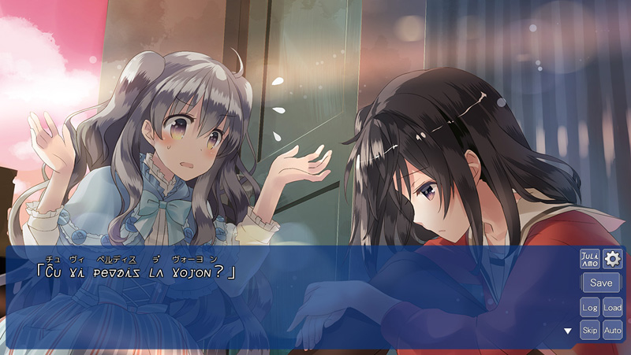
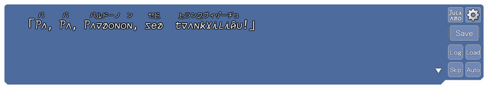

初めまして！ 突然ですが3週連続で、コラム内インタビューを掲載することになりました。
新ブランド・
SukeraSparo（スケラスパーロ）です。
「SukeraSparo」……このブランドの意味は「鯛焼き屋」!?
どうして「鯛焼き屋」なのか気になる方はぜひ公式サイトを見てください。
さて、2017年8月25日（金）にはいよいよデビュー作の『
ことのはアムリラート』が発売！
電撃姫.comさんでも紹介していただいてます。
■桃色の空の下で描かれる、女の子同士の物語『ことのはアムリラート』
8月の発売まで待ちきれない！
もっともっとゲームのことについて知りたい♡ という声にお応えして、ことのはアムリラートを生んだクリエイターさんたちの制作秘話をお届けしちゃいたいと思います。
まず最初は、物語の生みの親・シナリオライターのJ-MENTさんへお話を伺いました。よろしくお願いします！！
●百合について
――百合展が話題を呼んだりと、今、百合が静かなブームになりつつありますが、実際に百合作品を書かれてみていかがでしたか？
J-MENT 流行には疎い身のため、今回はオーソドックスに『ふたりの女の子が仲良くなれる世界』を目指して筆を進めてみました。
――この物語に描かれる百合で一番大切にしたものはなんですか？
J-MENT 凜とルカの関係性で、『それぞれが抱えている問題にお互いがどう踏み込んでいくか？』の部分です。
――ところで「純百合アドベンチャー」とはなんですか？
J-MENT 色々と説明しづらい作品だったので、根本的でブレない部分――『女の子ふたりが恋仲になる』を主張するために付けた呼び方です。
異世界を舞台に奮闘するので、後半の『アドベンチャー』も誇大広告にはならないと思っております。
●ことのはアムリラートという物語とJuliamo（ユリアーモ）について
――凛が迷い込む異世界にはJuliamo（ユリアーモ）という言語があり、そのモチーフにエスペラントが起用されるなど、新しい試みがされている作品ですが、執筆前はどんな準備をされましたか？

J-MENT 辞書や教材系の本を探しに行くと、普通の本屋さんでは選べるほど種類がありませんでした。そこで、早稲田にあるエスペラント協会へと足を運び、必要そうな本を片っ端から買って帰りました。
※後日、これがきっかけとなってエスペント協会を通じ、藤巻様へ監修をお願いする流れとなりました。
――執筆期間はどのくらいでしたか？
J-MENT 今回の物語を書くにあたり、学習モード全般の動作環境も製作していたため、正確な執筆期間は分かりません。ただ、当初予定していた時間よりも半端なく時間がかかったのは確かです。
――Juliamo（ユリアーモ）の部分は、どのようにして執筆されたのでしょうか？
J-MENT ルカとレイの台詞は、想定した言葉を自分なりに訳したエスペラントで執筆し、凜とコミュニケーションをとらせてます。そして、仮完成させたシナリオを監修していただき、8割～9割近くに修正が入りました。
単純に、正しいエスペント訳にすれば物語が成立するわけではありません。簡単な１フレーズで済むと想定していた場面が、「実はかなり難しい言葉を必要だった」となれば、凜には理解しきれなくなったりもします。
そうなると、前後を確認して話の流れを組み替え、それでもダメなら『大幅にブロックで書き直し』が必要となります。物語の構造面でのパズルに対し、別次元の歯車が混ざったような状況の中での執筆作業が続きました。
J-MENT なお、実際に書かれた『台詞１つに関するテキスト情報』は以下のようになります。
——————————————————————————–
＜エスペラント原文＞
es■ Pardonon, sedtrankvilig^u!
＜メッセージウィンドウ表示制御用の台詞＞
[ルカ] 「[@パ][、][@パ][、][@パ⑭ドーノ][ン], [セ③] [_][⑰ラン⑩ヴィ㍽ーヂュ][！]」
＜和訳(意図した台詞の内容)＞
ルカ「ご、ご、ごめんなさい！ 落ち着いて！」
——————————————————————————–
01.日本語で場面に合った台詞を考える(和訳の部分)。
02.和訳にあったエスペラントを導き出す(es■の原文)。
03.エスペラントに合わせた、メッセージウィンドウ用の単語マクロを入力する。
※ 丸数字は、発音記号を付加したカタカナの文字です。

――ひとことのセリフに３倍の労力がかかるということですね！！ 本当にお疲れ様でございました。そして、2人の恋にまず、その「言葉」が最初の障害にあるというのがとてもドラマチックですね。そんな「ことのは」という物語はどのようにして生まれたのですか？
J-MENT コミュニケーションの取りづらさが、ふたりの仲を深めていく……を道しるべに書かれた物語です。逆に、その部分がなければ、ふたりは恋に落ちなかったかもしれません。
――登場人物たちもみんな魅力的で可愛いですね。凛、ルカ、レイの誕生秘話などありましたら教えてください。
J-MENT 凜は、開発関係者以外には絶対に公開できない『ライター簡易プロット』が存在します。こちらの簡易プロットの中で書かれた『超JK凜』が、時間と共に本編にも影響を与え、『大雑把な性格・凜』となりました。
ルカは、カタコトの日本語しゃべり＋エスペラント……の時点で、もう95％完成した感がある子です。レイは、気づいたら、悪戯好きの先生になってました。
●ゲームについて
――本作の見所や注目のポイントを教えてください
J-MENT かわいらしいイラスト＆破壊力抜群のボイスです。
――最後に作品を待っているファンの皆さんへメッセージをお願いします。
J-MENT 百合/異世界/理解できない言語……など、皆様が最初に興味を持たれた入口は違うとは思います。が、一歩踏み込んでしまえば、そこはもう『ことのはアムリラート』の世界です。
まったく言葉が分からない状態で、迷い込んだ凜と共に右往左往するもよし。先にこっそり予習して、凜の一歩先も歩むもよし。
進め方は十人十色だと思いますので、それぞれの楽しみ方を見つけていただければと思います。
――ありがとうございました！！
……ということで、皆様いかがでしたでしょうか？
エスペラントと百合がなぜ交わることになったのか、今回J-MENTさんのお話で垣間見ることができたような気がします。
J-MENTさんが粉骨砕身で挑まれたJuliamo（ユリアーモ）が物語にどのようなインパクトを与えるのか、今から楽しみですね。